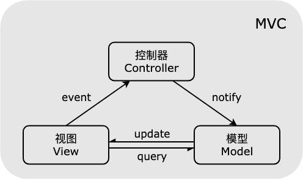
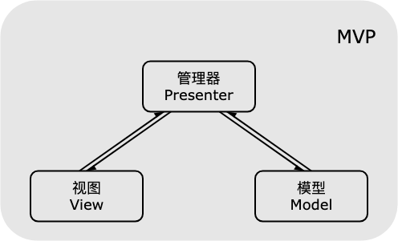
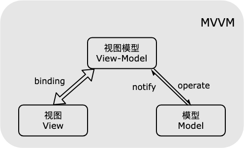

架构型设计模式
前言
本人平时学习及收集内容，欢迎参入一起讨论。
内容
一、同步模块模式
1.1 介绍
- 模块化： 将复杂的系统分解成高内聚、低耦合的模块，使系统开发变得可控、可维护、可扩展，提高模块的重复使用率。
- 同步模块模式： 请求发出去之后，无论模块是否存在，立即执行后续的逻辑，实现模块开发中对模块的立即使用。
1.2 代码
/*
* 模块化开发就是讲复杂的系统分解为高内聚，低耦合的模块。
* 每个工程师都可以去开发自己的模块实现复杂的系统可控，可维护，可扩展。模块相互之间可以调用
* 要点：首先要有一个模块管理器，管理模块的创建和调度
* 模块调动：调用分为两类，一类同步模块调用的实现，第二类是异步的实现
*/
// 模块管理对象F
class F{
static define(str,fn){
let parts = str.split('.'),
old = this,
parent = this,
i = 0,
len = 0;
// 如果第一个模块是管理模块器，则移除
if(parts[0] === 'F'){
parts = parts.slice(1);
}
// 屏蔽对define与module模块
if(parts[0] === 'define' || parts[0] === 'module'){
return false
}
// 遍历路由模块并且定义每层模块
for()
}
// 使用模块
static module(){
}
}
2
3
4
5
6
7
8
9
10
11
12
13
14
15
16
17
18
19
20
21
22
23
24
25
26
27
28
29
30
31
二、异步模块模式
2.1 介绍
请求发出去之后，继续执行其他业务逻辑，知道模块加载完成执行后续的逻辑，实际模块开发中模块加载完成后引用。
2.2 代码
let getUrl = function (moduleName){
return String(moduleName).replace(/\.js$/g,'')+'.js';
};
loadScript = function(src){
};
let moduleCache = {},
setModule = function(moduleName,params,callback){
};
let loadModule = function(moduleName,callback){
};
F.module = function(url,modDeps,modCallBack){
};
2
3
4
5
6
7
8
9
10
11
12
13
14
15
16
三、Widget 模式
3.1 介绍
Widget 模式就是借用 web Widget 思想将页面分解为部件，针对部件开发，最终组合为完整的页面。
四、MVC 模式
MVC 模式将程序分为三个部分：模型（Model）、视图（View）、控制器（Controller）。
- Model 模型层： 业务数据的处理和存储，数据更新后更新；
- View 视图层： 人机交互接口，一般为展示给用户的界面；
- Controller 控制器层： 负责连接 Model 层和 View 层，接受并处理 View 层触发的事件，并在 Model 层的数据状态变动时更新 View 层；
MVC 模式的目的是通过引入 Controller 层来将 Model 层和 View 层分离，分层的引入是原来大锅烩方式的改进，使得系统在可维护性和可读性上有了进步。
View 层通过事件通知到 Controller 层，Controller 层经过对事件的处理完成相关业务逻辑，要求 Model 层改变数据状态，Model 层再将数据更新到 View 层。示意图如下：

五、MVP 模式
MVP 模式将程序分为三个部分：模型（Model）、视图（View）、管理层（Presenter）。
- Model 模型层： 只负责存储数据，与 View 呈现无关，也与 UI 处理逻辑无关，发生更新也不用主动通知 View;
- View 模型层： 人机交互接口，一般为展示给用户的界面；
- Presenter 管理层： 负责连接 Model 层和 View 层，处理 View 层的事件，负责获取数据并将获取的数据经过处理后更新 View;
MVC 模式的 View 层和 Model 层存在耦合，为了解决这个问题，MVP 模式将 View 层和 Model 层解耦，之间的交互只能通过 Presenter 层，实际上，MVP 模式的目的就是将 View 层和 Model 层完全解耦，使得对 View 层的修改不会影响到 Model 层，而对 Model 层的数据改动也不会影响到 View 层。

六、MVVM 模式
MVVM模式将程序分为三个部分：模型（Model）、视图（View）、视图模型（View-Model）。和 MVP 模式类似，Model 层和 View 层也被隔开离开，彻底解耦，ViewModel 层相当于 Presenter 层，负责绑定 Model 层和 View 层，相比于 MVP 增加了双向绑定机制。

MVVM 模式的特征是 ViewModel 层和 View 层采用双向绑定的形式（Binding），View 层的变动，将自动反映在 ViewModel 层，反之亦然。
参考资料
- 《JavaScript 设计模式》
- MVC、MVP、MVVM
联系作者
平凡世界，贵在坚持。